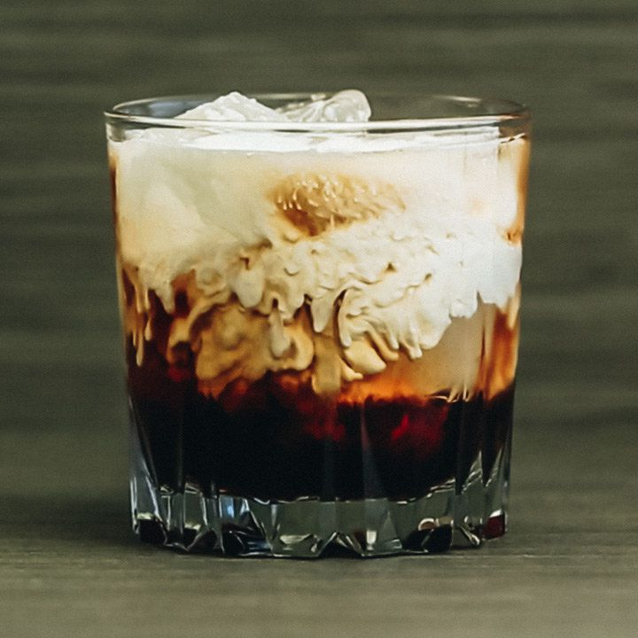

White Russian
written by Lucia
written by Lucia
The White Russian came about in the 1960s when someone added a bit of cream to the Black Russian, rendering it white. Neither drink is actually Russian in origin—the Black Russian itself is thought to have originated in Belgium, where it was first created for a U.S. ambassador to Luxembourg. Rather, the name is simply a reference to their base spirit, vodka.
The White Russian suffered a bit from a stodgy, antiquated reputation for a number of decades, until the 1998 movie “The Big Lebowski” came along and breathed new life into the cocktail. That is, of course, thanks to Jeff Bridges’ character, the Dude, sipping it exclusively—and constantly—throughout the film’s duration.
The White Russian’s instant cultural prominence in the film’s aftermath is one of popular culture’s best drinks-related successes. One analogue would be Carrie Bradshaw’s impact on the Cosmo—but then the Cosmopolitan had only been birthed a few years before “Sex and the City” debuted. The White Russian, by comparison, had decades of dust to wipe off by the time “The Big Lebowski” rolled around.